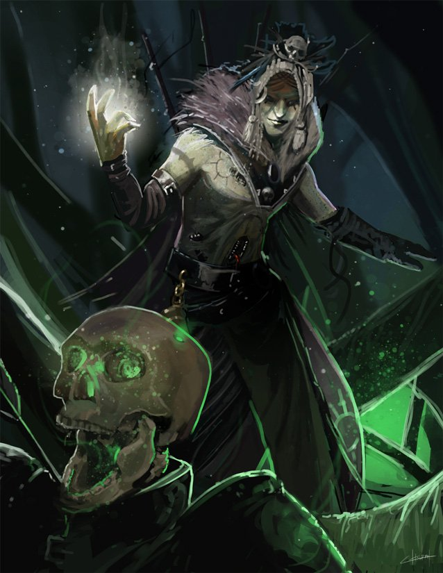

Classes > Mages > Necromancer
Non-Lawful and Non-Good only. Also known as Black Mage, Death Mage or Animist. A sacrilegious breaker of the divine pact who utilizes forbidden scourge magicks to chain the dead into servitude and tamper with natural decay.
Necromancers are universally reviled among all cultures, even those that begrudgingly justify their practices as a necessary evil. All the divines in the world of Dunia regard the process of transitioning the dead from material carcasses to the external planes into the most important and vulnerable part of their existences, and the Necromancer understands the reason behind that vulnerability. By manipulating the forces of the divine element of Scourge, not only can they tug on the chain which binds souls of living things to their bodies and keep them from breaking, but they can lead these metaphorical chains like leashes, commanding the newly dead or their husks into total obedience. The element of Scourge also allows Necromancers a particular affinity for controlling the speed at which things decay, reversing or hastening the process of biological entropy and even transfusing or sapping life between bodies. Lunarians can't be Necromancers.
Level 1: Necromancers can innately cast the spell Animate Dead without having to memorize it. The ensuing minion lasts until it dies, and when striking a victim adds half the Necromancer's level rounded up in extra Shadow damage.
Level 4: Necromancers gain immunity to being charmed and resistance to poison. They may also sap life from one being and grant it to another, consuming a spell slot to transfer their health multiplied by the slot's level in life. If the victim is unwilling, they must roll for standard CON Shadow spell resistance.
Level 8: Necromancers begin to project a powerful 20ft aura of undeath which heals the undead at a rate of 1 health/level every six rounds, and causes sickness to the living that slowly drains 1 STR and 1 CON per six rounds of being within, up to a maximum of -3, and does not heal for an hour. They may control the width of this aura at will, up to its maximum of a 20 foot radius surrounding them, or suppress it entirely.
Level 12: Necromancers become completely immune to fear, poison and disease.
Level 16: The Necromancer may begin the process of ascending into a Lich by creating a phylactery. This process requires a hollow container made of any inorganic material worth 10,000gp or more, and requires casting an 8th level spell after an entire day of ritual chanting to bind themselves to it. Once the phylactery is ready, the Necromancer must alchemize a deadly concoction made of the blood of three separate murdered creatures: a human infant that died of wyvern poisoning, a non-human killed by a phase spider, and a humanoid killed by a mixture of arsenic and belladonna, and drink said concoction to die near their phylactery and be reborn. They become Undead, their natural appearance rots and becomes visibly mummified, they gain vision in total darkness, and can recalculate their maximum health using CHA instead of CON. If the Lich dies while the rest of their party survives and their phylactery is intact, they reawaken after 10 days near it.
|
Level |
Base Slots |
Bonuses |
Level |
Base Slots |
Bonuses |
|
1 |
2 |
Spellbook, Permanent Pet |
11 |
4/3/3/3/3/1 |
- |
|
2 |
3 |
- |
12 |
4/3/3/3/3/1 |
Feat, Impenetrable |
|
3 |
4/2 |
- |
13 |
4/3/3/3/3/1/1 |
- |
|
4 |
4/3 |
Feat, Steeled Mind, Sap Life |
14 |
4/3/3/3/3/1/1 |
- |
|
5 |
4/3/2 |
Control Magic, Counterspell |
15 |
4/3/3/3/3/1/1/1 |
Absorb Magic II |
|
6 |
4/3/3 |
- |
16 |
4/3/3/3/3/1/1/1 |
Feat, Lichdom |
|
7 |
4/3/3/1 |
- |
17 |
4/3/3/3/3/1/1/1/1 |
- |
|
8 |
4/3/3/2 |
Feat, Aura of Undeath |
18 |
4/3/3/3/3/1/1/1/1 |
- |
|
9 |
4/3/3/3/1 |
- |
19 |
4/3/3/3/3/2/1/1/1 |
Feat |
|
10 |
4/3/3/3/2 |
Absorb Magic |
20 |
4/3/3/3/3/2/2/1/1 |
Absorb Magic III |